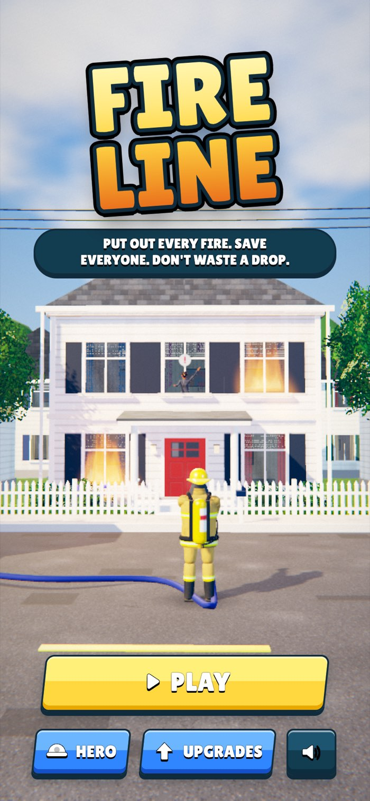
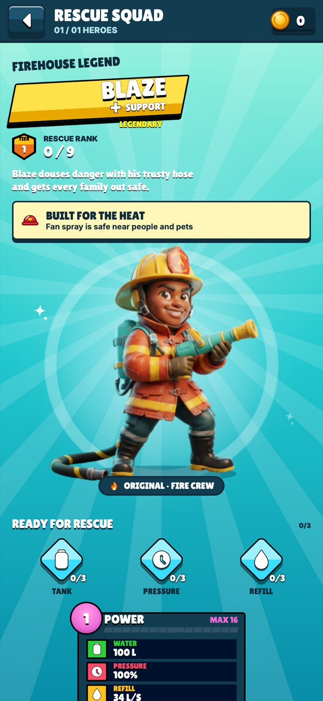
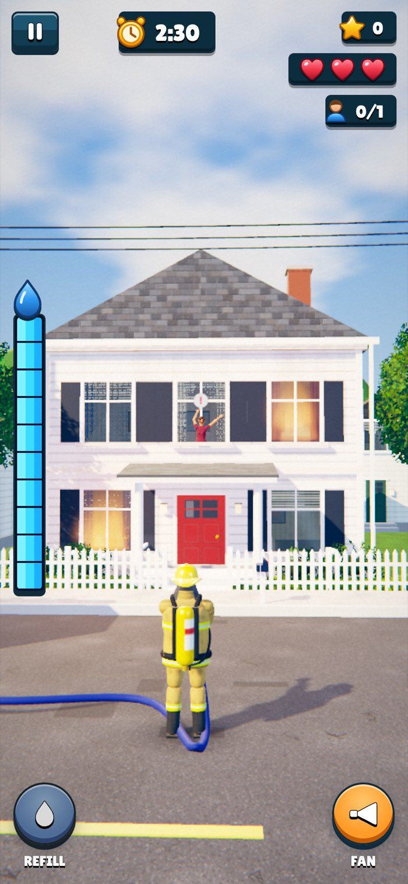
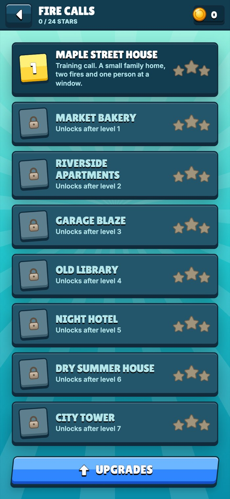
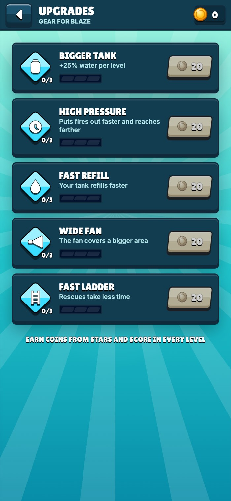

My first game built with AI: a light, simple firefighter game, made with Claude, Higgsfield and Figma in a three-hour sprint.
How I Built My First Game with AI in Three Hours
Fireline started with a question: how would I build a game with AI for the first time, and which tools would I need to do it? To find out, I connected Claude to Higgsfield and a few more plugins, and paired that with my own design work in Figma, including a hero screen for a firefighter character named Blaze. I gave myself a deliberately short brief: about three hours of work, from the first idea to something anyone can open in a browser and play.
Challenge
Game UI that only lives in Figma never gets tested by a thumb. The buttons, counters and panels look right in a frame, but you only learn if they work once there is a timer running and a fire spreading behind them.
Solution
A short, focused game loop built around the existing design: put out every fire, rescue the people inside, and don't waste water, wrapped in the menus, upgrade screen and hero screen from the original Figma page.
Outcome
A playable build in roughly three hours: eight fire calls, five upgrades, a hero screen and a full in-game HUD, running in the browser on both phone and desktop.
Where the Idea Came From
The tools came first. I wanted to see what it actually takes to make a game with AI, so the project began as an experiment in setting up the right workflow: Claude as the main builder, connected to Higgsfield and other plugins, with Figma as the place where I designed the look of the game.
The game itself came straight from my head. I didn't look for a complicated concept, I thought about a light, simple game that is quick to understand and hard to put down, the kind of "one more round" loop that can become addictive. A firefighter racing a spreading fire with a limited tank of water fit that perfectly.
The Three-Hour Brief
This was a short project on purpose. With only three hours, every hour had to go into the parts a player actually touches, so I set three rules before starting.
Key Principles
- The design leads: the Figma page is the source of truth, and the game is built to match it, not the other way around.
- One clear loop: one core mechanic done well, putting out fires with a limited tank, instead of many half-finished ideas.
- Ship something playable: every level reuses the same core loop with a new twist, gas tanks, pets, high floors or fast-spreading fire, instead of building new systems for each one.
Process & Decisions
Most of the decisions were about making the game easy to read in a split second, while things are on fire.
- Water as the main resource: a segmented tank on the side of the screen drains while you spray and refills from the truck, so every shot is a small decision rather than button mashing.
- Two nozzles, two jobs: a wide fan spray that is safe near people and pets, and a stronger jet for bigger flames, switched with one large button under the thumb.
- A HUD you can read at a glance: timer at the top center, score, hearts and rescued people stacked on the right, all in the same navy pills from the Figma design.
- A reason to replay: each fire call is scored out of three stars, stars and score earn coins, and coins buy upgrades like a bigger tank, faster refill or a wider fan.
- The hero screen, made real: Blaze's name plate, rank, gear and power stats from the original Figma page became an actual screen in the game.
- An AI-first workflow: Claude, connected to Higgsfield and other plugins, turned the design into a working 3D build quickly, while I owned the idea, the game design, the UI and the visual decisions.


Visual Language
Everything comes from the Figma page: teal spotlight backgrounds, navy panels with a hard ink outline and drop, slanted yellow name plates, and Lilita One in white caps with a solid black shadow. Buttons are two-tone and slightly slanted, with yellow reserved for the main action.
What I took away
A time box sharpens decisions: with three hours there was no room to build everything, so I had to decide early what the core loop was and let each level build on it.
Game UI has to work under pressure: a counter that looks fine in a still frame can disappear once fire, smoke and water are moving behind it, so contrast and hard outlines matter even more here.
Playable beats perfect: a short build someone can actually play says more about a design than any static frame.
Thanks for reading!
More projects
Keep exploring the work.